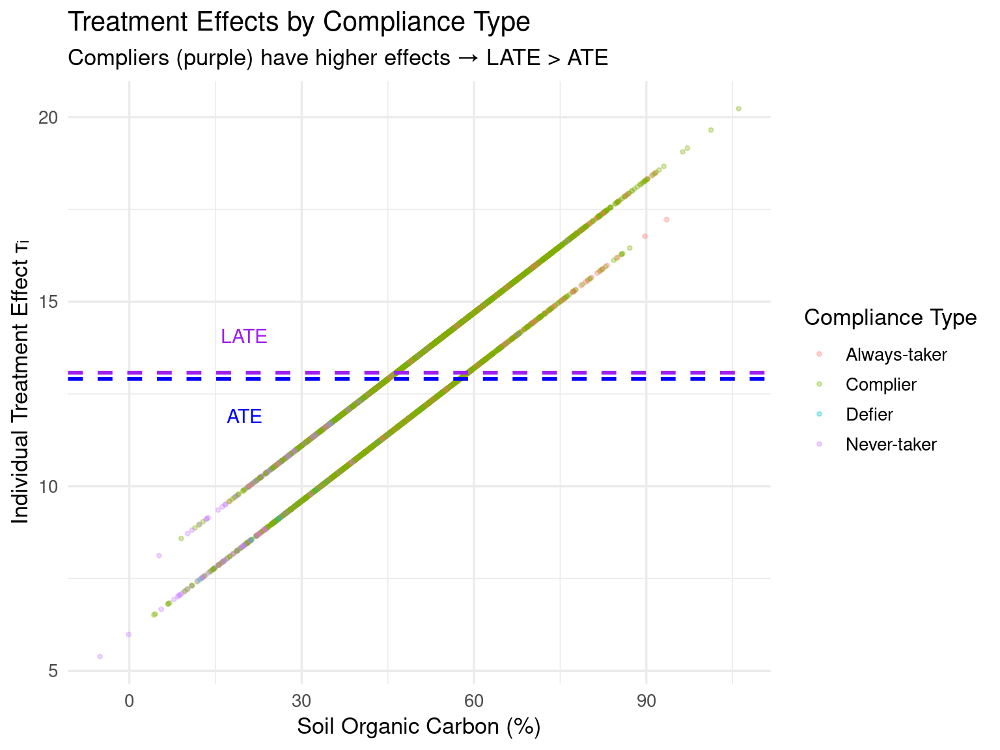
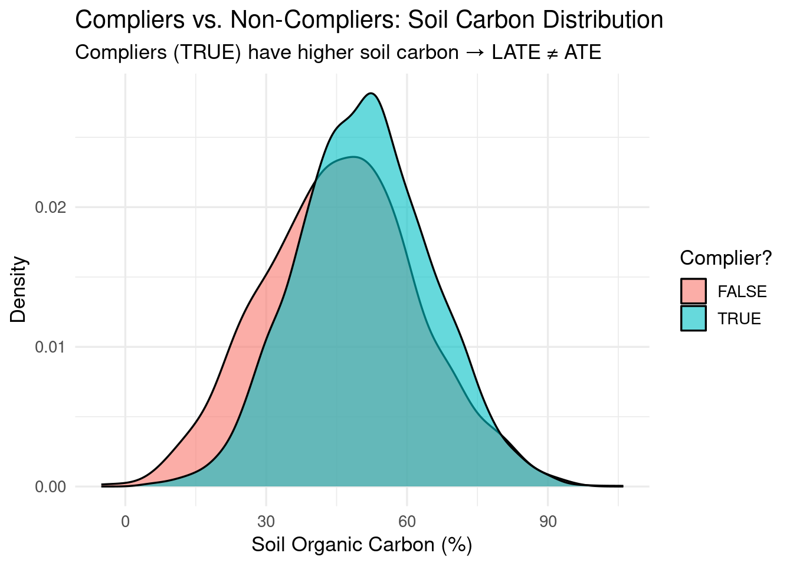
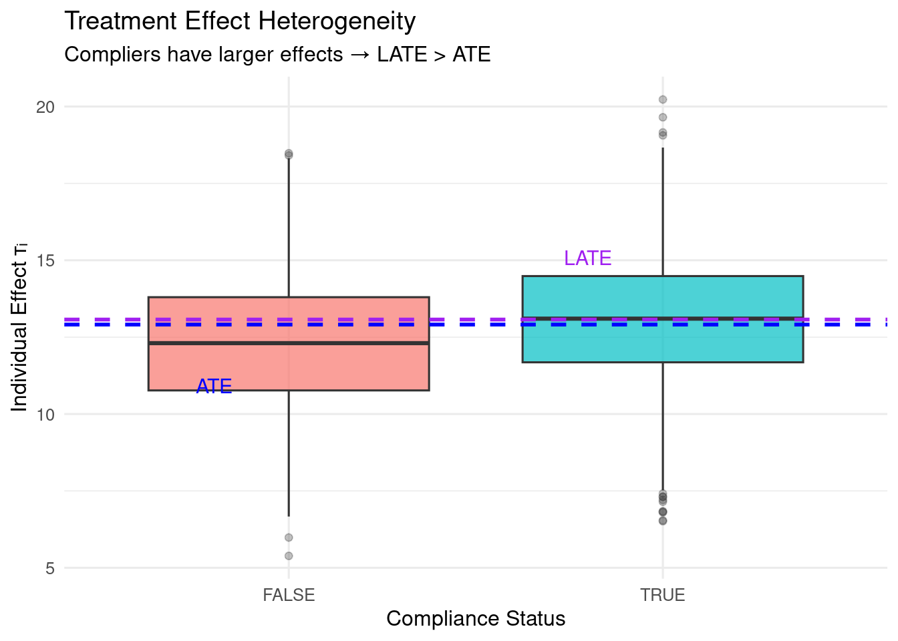

Code
packages <- c(
'tidyverse',
'AER',
'consort',
'DiagrammeR',
'broom'
)
This tutorial provides a practical focus on the four core causal estimands — ATE, ATT, and CATE with R code that explicitly demonstrates their conceptual differences, estimation strategies, and environmental applications. All examples use simulated data with known ground truth to clarify what each estimand represents.
Causal estimands are the specific quantities we aim to estimate to understand the causal effect of a treatment or intervention. In the potential outcomes framework, the most common causal estimands include:
| Estimand | Formula | Target Population | When Effects Are Heterogeneous |
|---|---|---|---|
| ATE | \(\mathbb{E}[Y(1) - Y(0)]\) | Entire population | Average effect if everyone complied |
| ATT | \(\mathbb{E}[Y(1) - Y(0) \mid Z=1]\) | Treated units | Effect for those who actually received treatment |
| CATE | \(\mathbb{E}[Y(1) - Y(0) \mid X=x]\) | Units with covariates \(X=x\) | Effect varies by location/soil properties |
Critical insight: When treatment assignment is imperfect (non-compliance) or encouragement-based, LATE ≠ ATE. LATE estimates effects only for the subpopulation induced to change behavior by the instrument.
In R, we can simulate data with known heterogeneous effects and non-compliance to demonstrate how different estimands capture different causal questions. We will also show how to estimate LATE using instrumental variable methods and compare it to ATE and ATT.
packages <- c(
'tidyverse',
'AER',
'consort',
'DiagrammeR',
'broom'
)#| warning: false
#| error: false
# Install missing packages
new_packages <- packages[!(packages %in% installed.packages()[,"Package"])]
if(length(new_packages)) install.packages(new_packages)# Load packages with suppressed messages
invisible(lapply(packages, function(pkg) {
suppressPackageStartupMessages(library(pkg, character.only = TRUE))
}))# Check loaded packages
cat("Successfully loaded packages:\n")Successfully loaded packages: [1] "package:broom" "package:DiagrammeR" "package:consort"
[4] "package:AER" "package:survival" "package:sandwich"
[7] "package:lmtest" "package:zoo" "package:car"
[10] "package:carData" "package:lubridate" "package:forcats"
[13] "package:stringr" "package:dplyr" "package:purrr"
[16] "package:readr" "package:tidyr" "package:tibble"
[19] "package:ggplot2" "package:tidyverse" "package:stats"
[22] "package:graphics" "package:grDevices" "package:utils"
[25] "package:datasets" "package:methods" "package:base" set.seed(2026)
# Simulate population with non-compliance structure
n <- 5000
df <- tibble(
unit_id = 1:n,
# Confounders
X1 = rnorm(n, 50, 15), # e.g., soil organic carbon (%)
X2 = rbinom(n, 1, plogis(0.04 * X1 - 1.5)), # e.g., land tenure security
# INSTRUMENT: Random encouragement (e.g., subsidy offer)
Z = rbinom(n, 1, 0.5), # Randomized encouragement (50% chance)
# LATENT compliance type (unobserved!)
# D(1) = treatment if encouraged; D(0) = treatment if not encouraged
D1 = rbinom(n, 1, plogis(-1.0 + 0.08 * X1 - 0.5 * X2)), # Would take if encouraged
D0 = rbinom(n, 1, plogis(-3.0 + 0.03 * X1 - 1.0 * X2)), # Would take if NOT encouraged
# Observed treatment (depends on encouragement + latent preferences)
D = ifelse(Z == 1, D1, D0), # Actual adoption of practice
# Compliance types (for diagnostics only - NEVER observed in real data)
complier = (D1 == 1 & D0 == 0),
never_taker = (D1 == 0 & D0 == 0),
always_taker = (D1 == 1 & D0 == 1),
defier = (D1 == 0 & D0 == 1), # Assume none under monotonicity
# HETEROGENEOUS treatment effect (stronger for high-carbon soils)
tau_i = 6 + 0.12 * X1 + 1.5 * X2,
# Potential outcomes under SUTVA (no interference)
epsilon = rnorm(n, 0, 3.5),
Y0 = 25 + 0.35 * X1 - 4 * X2 + epsilon,
Y1 = Y0 + tau_i,
# Observed outcome (depends on ACTUAL treatment D, not encouragement Z)
Y = ifelse(D == 1, Y1, Y0)
)
head(df)The true ATE, ATT, and LATE can be calculated directly from the simulated data since we know the individual treatment effects (\(\tau_i\)) and compliance types. This allows us to see how different estimands capture different aspects of the causal effect under non-compliance and heterogeneity.
# TRUE population estimands (ground truth)
true_ate <- mean(df$tau_i) # Average over ALL units
true_att <- mean(df$tau_i[df$D == 1]) # Average over ACTUALLY treated
true_late <- mean(df$tau_i[df$complier]) # Average over COMPLIERS only
# Compliance rates
compliance_rate <- mean(df$complier)
cat("GROUND TRUTH ESTIMANDS:\n")GROUND TRUTH ESTIMANDS: ATE = 12.91 (average over entire population) ATT = 13.06 (average over actually treated units) LATE = 13.07 (average over COMPLIERS only)cat("\nCompliance structure:\n")
Compliance structure: Compliers: 78.8 % Never-takers: 9.2 % Always-takers: 11 % Defiers: 1 % (should be ~0 under monotonicity)cat("\n→ LATE > ATE because compliers are high-effect units (high X1)\n")
→ LATE > ATE because compliers are high-effect units (high X1)We can visualize how compliers differ from other groups in terms of their covariates and treatment effects. This helps illustrate why LATE can be larger than ATE when compliers have systematically higher effects.
# Show how compliers differ from other groups
p_compliance <- df %>%
mutate(compliance_type = case_when(
complier ~ "Complier",
never_taker ~ "Never-taker",
always_taker ~ "Always-taker",
TRUE ~ "Defier"
)) %>%
ggplot(aes(x = X1, y = tau_i, color = compliance_type)) +
geom_point(alpha = 0.3, size = 0.8) +
geom_hline(yintercept = true_ate, linetype = "dashed", color = "blue", size = 1) +
geom_hline(yintercept = true_late, linetype = "dashed", color = "purple", size = 1) +
annotate("text", x = 20, y = true_ate - 1, label = "ATE", color = "blue", size = 4) +
annotate("text", x = 20, y = true_late + 1, label = "LATE", color = "purple", size = 4) +
labs(title = "Treatment Effects by Compliance Type",
subtitle = "Compliers (purple) have higher effects → LATE > ATE",
x = "Soil Organic Carbon (%)", y = "Individual Treatment Effect τᵢ",
color = "Compliance Type") +
theme_minimal(base_size = 13)
print(p_compliance)
From this plot, we can see that compliers (purple points) tend to have higher values of \(X1\) and thus higher treatment effects (\(\tau_i\)). This explains why the LATE, which averages over compliers only, is larger than the ATE, which averages over the entire population including many low-effect never-takers.
Definition: \(\tau_{LATE} = \mathbb{E}[Y(1) - Y(0) \mid D(1) > D(0)]\)
Target population: Compliers only — units who take treatment iff encouraged
Key assumptions: 1. Relevance: \(P(D=1 \mid Z=1) \neq P(D=1 \mid Z=0)\) (instrument affects treatment) 2. Exclusion restriction: \(Z\) affects \(Y\) only through \(D\) (no direct path) 3. Monotonicity: No defiers (\(D(1) \geq D(0)\) for all units) 4. Independence: \(Z\) independent of potential outcomes (holds by randomization)
The 2SLS approach estimates LATE by first modeling the relationship between the instrument and treatment (first stage) and then using the predicted treatment to estimate the effect on the outcome (second stage). We will also check the strength of the instrument using the F-statistic from the first stage.
First stage: Does the instrument (encouragement) affect treatment uptake? This is a critical diagnostic step to ensure we have a strong instrument for valid LATE estimation.
#──────────────────────────────────────────────────────────────────────
# First Stage: Does instrument affect treatment? (CRITICAL DIAGNOSTIC)
# ──────────────────────────────────────────────────────────────────────
first_stage <- lm(D ~ Z + X1 + X2, data = df)
first_stage_summary <- summary(first_stage)
# Extract F-statistic for instrument strength
fs_fstat <- first_stage_summary$fstatistic[1]
fs_pval <- pf(first_stage_summary$fstatistic[1],
first_stage_summary$fstatistic[2],
first_stage_summary$fstatistic[3],
lower.tail = FALSE)
cat("FIRST STAGE DIAGNOSTICS (Is Z a strong instrument?):\n")FIRST STAGE DIAGNOSTICS (Is Z a strong instrument?): Coefficient on Z: 0.7872 F-statistic: 2897.24 ✓ STRONG instrument P-value: 0 Interpretation: Encouragement increases adoption probability by 78.72 percentage pointsSecond stage: Estimate LATE using 2SLS (instrumental variable regression)
# ──────────────────────────────────────────────────────────────────────
# Second Stage: Estimate LATE via 2SLS
# ──────────────────────────────────────────────────────────────────────
# ivreg syntax: outcome ~ treatment + covariates | instrument + covariates
late_2sls <- ivreg(Y ~ D + X1 + X2 | Z + X1 + X2, data = df)
# Tidy output with confidence intervals (requires broom package)
late_results <- tidy(late_2sls, conf.int = TRUE) %>%
filter(term == "D") %>% # Extract coefficient on treatment (D)
mutate(
estimand = "LATE (2SLS)",
true_value = true_late,
bias = estimate - true_value,
percent_bias = bias / true_value * 100
)
cat("LATE ESTIMATION RESULTS (2SLS):\n")LATE ESTIMATION RESULTS (2SLS): Estimate = 13.25 (95% CI: [12.99, 13.51]) True LATE = 13.07 Bias = 0.176 (1.3%) Standard Error = 0.133 Alternatively, we can estimate LATE using the Wald estimator, which is the ratio of the ITT effect on the outcome to the ITT effect on treatment uptake. This approach is more transparent and directly shows how compliance rates affect the LATE estimate.
itt_y <- df %>%
group_by(Z) %>%
summarise(mean_Y = mean(Y), .groups = "drop") %>%
arrange(Z) %>%
pull(mean_Y) %>%
diff()
itt_d <- df %>%
group_by(Z) %>%
summarise(mean_D = mean(D), .groups = "drop") %>%
arrange(Z) %>%
pull(mean_D) %>%
diff()
late_wald <- itt_y / itt_d
compliance_rate <- itt_d # Estimated proportion of compliers
cat("\nWALD ESTIMATOR (Alternative LATE calculation):\n")
WALD ESTIMATOR (Alternative LATE calculation): ITT on outcome (ITT_Y): 10.381 ITT on treatment (ITT_D): 0.786 Estimated complier proportion: 78.6 % LATE (Wald) = 13.2 We can see that the LATE estimate from the Wald estimator should be close to the 2SLS estimate, and both should be close to the true LATE we calculated from the simulated data. Below, we visualize how compliers differ from non-compliers in terms of their covariates and treatment effects, reinforcing why LATE can differ from ATE when compliers have systematically higher effects.
p_compliers <- df %>%
mutate(complier = as.factor(complier)) %>%
ggplot(aes(x = X1, fill = complier)) +
geom_density(alpha = 0.6) +
labs(title = "Compliers vs. Non-Compliers: Soil Carbon Distribution",
subtitle = "Compliers (TRUE) have higher soil carbon → LATE ≠ ATE",
x = "Soil Organic Carbon (%)", y = "Density", fill = "Complier?") +
theme_minimal(base_size = 13)
print(p_compliers)
Now we can visualize how the compliance filter selects a subpopulation with systematically higher treatment effects, leading to LATE > ATE. The plot below shows the distribution of individual treatment effects (\(\tau_i\)) for compliers vs. non-compliers, highlighting the heterogeneity that drives the difference between LATE and ATE.
# Relationship between compliance and treatment effect
p_compliance_effect <- df %>%
mutate(complier = as.factor(complier)) %>%
ggplot(aes(x = complier, y = tau_i, fill = complier)) +
geom_boxplot(alpha = 0.7, outlier.alpha = 0.3) +
geom_hline(yintercept = true_ate, linetype = "dashed", color = "blue", size = 1) +
geom_hline(yintercept = true_late, linetype = "dashed", color = "purple", size = 1) +
annotate("text", x = 0.8, y = true_ate - 2, label = "ATE", color = "blue", size = 4) +
annotate("text", x = 1.8, y = true_late + 2, label = "LATE", color = "purple", size = 4) +
labs(title = "Treatment Effect Heterogeneity",
subtitle = "Compliers have larger effects → LATE > ATE",
x = "Compliance Status", y = "Individual Effect τᵢ", fill = "Complier?") +
theme_minimal(base_size = 12) +
theme(legend.position = "none")
print(p_compliance_effect)
| Research Question | Appropriate Estimand | Real-World Example |
|---|---|---|
| “What is the effect if we mandate this practice for everyone?” | ATE | Regulatory policy requiring cover crops on all farms |
| “Did participants in our voluntary program benefit?” | ATT | Evaluating existing conservation program participants |
| “Where should we target subsidies for maximum impact?” | CATE | Precision targeting of soil health incentives |
| “What is the effect of offering subsidies (knowing not everyone will adopt)?” | LATE | Randomized trial of subsidy offers with partial take-up |
| “What is the effect for farmers who would adopt ONLY if subsidized?” | LATE | Understanding marginal adopters’ response to incentives |
This tutorial has demonstrated the critical importance of selecting the appropriate causal estimand based on the research question, data structure, and compliance patterns. The key takeaways regarding LATE include:
LATE ≠ ATE: LATE estimates effects only for compliers—the subpopulation whose behavior changes in response to the instrument. When effects differ across compliance types, LATE and ATE diverge.
LATE requires strong assumptions:
Always report compliance rate: LATE = ITT_Y / ITT_D, so the denominator (compliance rate) is essential for interpretation. A LATE of 10 with 10% compliance implies ITT of only 1.
LATE is policy-relevant for encouragement designs: When policies can only encourage (not mandate) behavior change (e.g., subsidies, technical assistance), LATE answers the practical question: “What is the effect per person induced to comply?”
Never extrapolate LATE to non-compliers: Assuming LATE = ATE requires homogeneity of treatment effects across compliance types—a strong and often implausible assumption.
Hernán & Robins (2020). Causal Inference: What If * — Free online; clearest definitions of all estimands.
→ causalinferencebook.com
Imbens & Rubin (2015).** Causal Inference — Rigorous potential outcomes foundation.
Angrist & Pischke (2008). Mostly Harmless Econometrics — Practical LATE/IV focus.
Angrist, Imbens & Rubin (1996). Identification of Causal Effects (JASA) — LATE definition
Imbens (2004). Nonparametric estimation of average treatment effects (ReStat) — ATE vs. ATT
Athey & Imbens (2016). Recursive partitioning for heterogeneous causal effects (PNAS) — CATE via causal forests